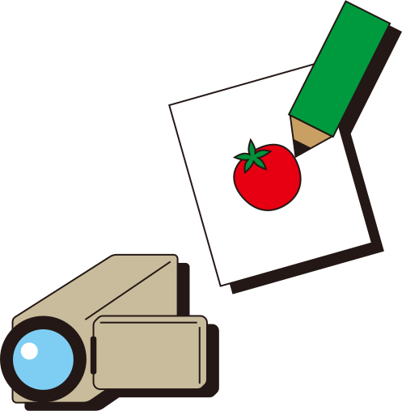
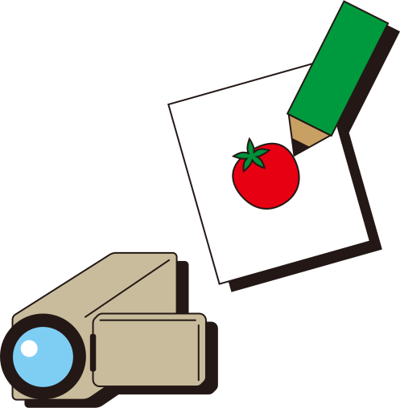

はじめに
子どものころから絵を描いたり動画を作るなど、モノづくりに強く魅了されてきました。長年興味を持っていたWEBデザインやイラスト制作の分野で本格的に学びたいと思い、前職の退職を機に職業訓練校に入学しました。私が大切にしているのは、「私らしさ」を活かしながらも、見る人にとって分かりやすく、心地よいと感じてもらえる“個性的でまとまりのあるデザイン”です。
子どものころから絵を描いたり動画を作るなど、モノづくりに強く魅了されてきました。長年興味を持っていたWEBデザインやイラスト制作の分野で本格的に学びたいと思い、前職の退職を機に職業訓練校に入学しました。私が大切にしているのは、「私らしさ」を活かしながらも、見る人にとって分かりやすく、心地よいと感じてもらえる“個性的でまとまりのあるデザイン”です。
